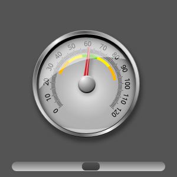

UI Components: Dial Control Example
The Dial Control Example shows how to create a speedometer-type dial.
This example shows how to create a dial-type control. It combines Image elements with Rotation transforms and SpringAnimation behaviors to produce an interactive speedometer-type dial.
